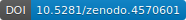
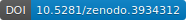
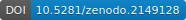

Toolbox for Computational Magnetic Resonance Imaging

Figure: Simulated MRI images.
BART Events 2021
We are excited to announce a new series of virtual events!
1. BART user-support meeting
This meeting is open to all (no registration required)
Time: May 12, 2021, at 8am-9am US-PDT.
In this online meeting our team will be available to assist users with installing BART and answering any questions related to BART usage.
The zoom link will be sent to our users list
mrirecon
one day before the meeting. Sign up to receive updates!
Check your local time
here.
2. ISMRM software demo: Non-linear models and deep learning
Time: May 16, 2021, at 12pm PST
As part of the ISMRM 2021 meeting, we will be giving a demo of the new features of BART related to non-linear model-based reconstruction and deep learning integration.
Please note that you must be registered for the ISMRM 2021 meeting in order to attend.
For more information, see here.
Check your local time
here.
3. BART Webinar - Parallel-Imaging Compressed Sensing Recon
Time: July 14, 2021, at 8am PST.
More details soon.
List of Features
- basic features:
- runs on Linux and Mac OS X
- multi-dimensional operations on arrays
- fast non-uniform Fourier Transform (nuFFT and convolution-based method)
- multi-dimensional (divergence-free) wavelet transform
- parallel computation on multiple cores and with Graphical Processing Units (GPU)
- iterative methods:
- Conjugate Gradients (CG)
- (Fast) Iterative Soft-Thresholding Algorithm (ISTA and FISTA)
- Normalized iterative hard thresholding (NIHT)
- Alternating Direction Method of Multipliers (ADMM)
- Iteratively Regularized Gauss-Newton Method (IRGNM)
- Chambolle-Pock primal-dual algorithm
- calibration methods:
- direct calibration of coil sensitivities from k-space center
- Walsh's method for calibration of coil sensitivities
- ESPIRiT
- (geometric) channel compression and whitening
- RING: estimation of gradient delays for radial MRI
- reconstruction methods for MRI:
- iterative parallel imaging reconstruction: POCSENSE, SENSE
- compressed sensing and parallel imaging
- calibration-less parallel imaging: NLINV and ENLIVE (non-linear optimization) and SAKE (structured low-rank matrix completion)
- reconstruction with linear subspace constraints
- non-linear model-based reconstruction for T1 mapping
- regularization (in arbitrary dimensions):
- Tikhonov
- total variation
- l1-wavelet
- (multi-scale) low-rank
Example
Perform ESPIRiT calibration and image reconstruction with l1-wavelet regularization:
$ bart ecalib kspace sensitivities
$ bart pics -l1 -r0.001 kspace sensitivities image_out
A python-based image viewer (bartview.py) which can read the
BART data format is included in the source repository.
An image viewer for Linux and Mac OS X can be found here.
You can try BART directly in your browser: 
Mailing List
Please direct all questions or comments to the public mailing list:
(or contact the main author: martin.uecker at med.uni-goettingen.de)
Download
Note: The software is intended for research use only and NOT FOR DIAGNOSTIC USE. It comes without any warranty (see LICENSE for details).
Releases:
It is recommended to download the latest release. All releases can be found here.
Selected releases:
- bart: version 0.7.00 (2021) 
- bart: version 0.6.00 (2020) 
- bart: version 0.4.04 (2018) 
- bart: version 0.2.08 (2015)
BART has also been included in Debian GNU/Linux (and Ubuntu). The
Debian binary package can be reproducibly built
from the source code (as distributed by Debian) and can be downloaded from here. There is also a package for the image viewer. We also provide unofficial packages for Fedora and CentOS:  .
.
Please note that running BART on Windows is not supported. Nevertheless, some versions of BART are reported to work on Windows using WSL or Cygwin.
For developers: the C source code can be found in the GitHub repository
Installation
Installation of the required libraries, downloading and unpacking of the archive, and compilation on Linux is usually as simple as typing the following commands:
$ sudo apt-get install make gcc libfftw3-dev liblapacke-dev libpng-dev libopenblas-dev
$ wget https://github.com/mrirecon/bart/archive/vX.Y.ZZ.tar.gz
$ tar xzvf vX.YY.ZZ.tar.gz
$ cd bart-X.YY.ZZ
$ make
See the README file included with the source code for further instructions and for Mac OS X and Windows.
If you are a Docker user you can also start with this extremely simple Dockerfile.
Matlab Interface and Examples
The toolbox can also be used in combination with Matlab/Octave.
>> sensitivities = bart('ecalib', kspace);
>> image_out = bart('pics -l1 -r0.001', kspace, sensitivities);
More examples where the tools are called directly from Matlab can be found here.
Matlab code and data: GitHub repository
A Matlab-based image viewer which works well with BART is arrayShow by Tilman Sumpf.
Webinar and Workshop Materials with Examples
There are new tutorials from our Webinar which you can find in a GitHub repository.
The toolbox was presented at the ISMRM 2016 Data Sampling and Image Reconstruction Workshop. This material was created for BART version 0.3.00 and later versions might have minor differences. Please check the README included with each release for up-to-date installation instructions.
Demo code and data: GitHub repository
Reproducible Research
This is a list of research paper which can be reproduced using BART.
- Xiaoqing Wang, Zhengguo Tan, Nick Scholand, Volkert Roeloffs, Martin Uecker. Physics-based Reconstruction Methods for Magnetic Resonance Imaging. Philos. Trans. R. Soc. A. 379:20200196 (2021) GitHub repository
- Xiaoqing Wang, Sebastian Rosenzweig, Nick Scholand, H. Christian M. Holme, Martin Uecker. Model-based Reconstruction for Simultaneous Multi-slice T1 Mapping using Single-shot Inversion-recovery Radial FLASH. Magnetic Resonance in Medicine 85:1258-1271 (2021) GitHub repository
- Sebastian Rosenzweig, Nick Scholand, H. Christian M. Holme, Martin Uecker. Cardiac and Respiratory Self-Gating in Radial MRI using an Adapted Singular Spectrum Analysis (SSA-FARY). IEEE Transactions on Medical Imaging ;39:3029-3041 (2020) GitHub repository
- Xiaoqing Wang, Florian Kohler, Christina Unterberg-Buchwald, Joachim Lotz, Jens Frahm, Martin Uecker. Model-based myocardial T1 mapping with sparsity constraints using single-shot inversion-recovery radial FLASH cardiovascular magnetic resonance. Journal of Cardiovascular Magnetic Resonance 21:60 (2019) GitHub repository
- Sebastian Rosenzweig, H. Christian M. Holme, Martin Uecker. Simple Auto-Calibrated Gradient Delay Estimation From Few Spokes Using Radial Intersections (RING). Magnetic Resonance in Medicine 81:1898-1906 (2019) GitHub repository
- H. Christian M. Holme, Sebastian Rosenzweig, Frank Ong, Robin N. Wilke, Michael Lustig, Martin Uecker. ENLIVE: An Efficient Nonlinear Method for Calibrationless and Robust Parallel Imaging. Scientific Reports 9:3034 (2019) GitHub repository
- Sebastian Rosenzweig, H. Christian M. Holme, Robin N. Wilke, Dirk Voit, Jens Frahm, Martin Uecker. Simultaneous Multi-Slice Reconstruction Using Regularized Nonlinear Inversion: SMS-NLINV. Magnetic Resonance in Medicine 79:2057-2066 (2018) GitHub repository
- Martin Uecker and Michael Lustig. Estimating Absolute-Phase Maps Using ESPIRiT and Virtual Conjugate Coils. Magnetic Resonance in Medicine 77:1201-1207 (2017) GitHub repository
References
A a generic reference (all versions): BART Toolbox for Computational Magnetic Resonance Imaging, DOI: 10.5281/zenodo.592960
- Martin Uecker. Machine Learning Using the BART Toolbox - Implementation of a Deep Convolutional Neural Network for Denoising. Joint Annual Meeting ISMRM-ESMRMB, Paris 2018, In Proc. Intl. Soc. Mag. Reson. Med. 26;2802
- Jonathan I Tamir, Frank Ong, Joseph Y Cheng, Martin Uecker, and Michael Lustig. Generalized Magnetic Resonance Image Reconstruction using The Berkeley Advanced Reconstruction Toolbox. ISMRM Workshop on Data Sampling and Image Reconstruction, Sedona 2016
- Martin Uecker, Frank Ong, Jonathan I Tamir, Dara Bahri, Patrick Virtue, Joseph Y Cheng, Tao Zhang, and Michael Lustig. Berkeley Advanced Reconstruction Toolbox. Annual Meeting ISMRM, Toronto 2015, In Proc. Intl. Soc. Mag. Reson. Med. 23:2486
- Martin Uecker, Patrick Virtue, Frank Ong, Mark J. Murphy, Marcus T. Alley, Shreyas S. Vasanawala, and Michael Lustig. Software Toolbox and Programming Library for Compressed Sensing and Parallel Imaging. ISMRM Workshop on Data Sampling and Image Reconstruction, Sedona 2013
- Martin Uecker, Peng Lai, Mark J. Murphy, Patrick Virtue, Michael Elad, John M. Pauly, Shreyas S. Vasanawala, and Michael Lustig. ESPIRiT - An Eigenvalue Approach to Autocalibrating Parallel MRI: Where SENSE meets GRAPPA. Magnetic Resonance in Medicine, 71:990-1001 (2014)